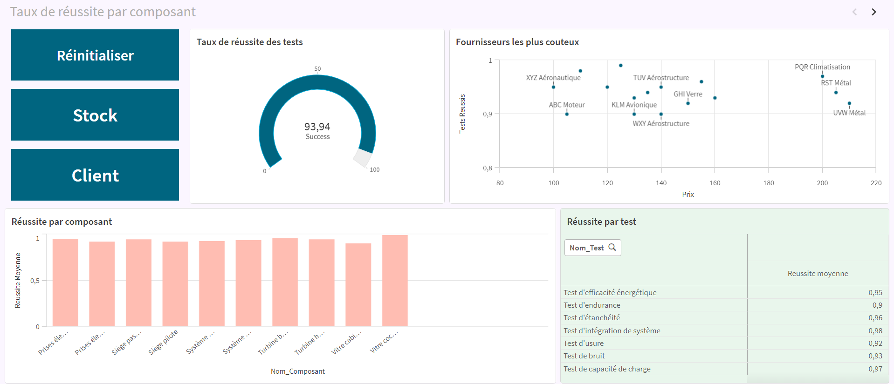
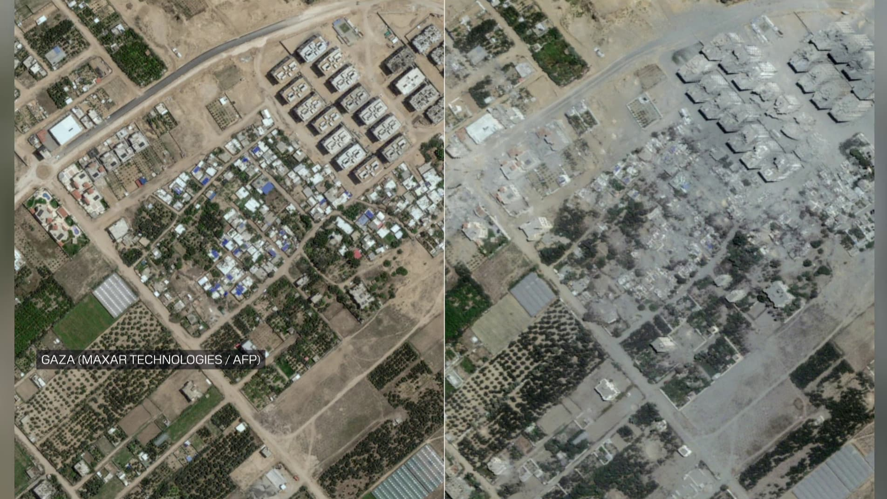

Spécialiste data passionné par la transformation de données complexes en outils de pilotage opérationnels. Expériences terrain en contexte international, maîtrise des environnements BI, ETL, ML et SIG — avec un intérêt marqué pour les problématiques données industrielles & aéronautiques.
En Master Business Intelligence & Analytics à l'Université Lumière Lyon 2, j'ai construit une expertise couvrant l'ensemble de la chaîne de valeur data : gouvernance, pipelines ETL, modélisation, reporting et machine learning.
Mon expérience chez Handicap International (1 an) m'a confronté à des données multi-sources, imparfaites, à fort enjeu opérationnel dans un contexte humanitaire international. J'ai appris à produire des analyses fiables sous contrainte et à les rendre accessibles aux équipes métiers non techniques.
Je maîtrise aussi bien les environnements ERP (SAP S4/HANA, Salesforce) que les outils de data quality (Talend TDQ, Power Query), et je travaille en méthode Agile SCRUM sur des projets data complexes.
Pipeline ML complet sur un dataset fortement déséquilibré (<1% de fraudes). Feature engineering, rééquilibrage SMOTE + Tomek Links, comparaison XGBoost / Random Forest / SVM, optimisation du seuil de décision pour maximiser le F1 sans exploser les faux positifs.
Architecture Data Lake Landing → Curated → Production pour analyser les offres Glassdoor/LinkedIn. Modèle en étoile, pipeline ETL Python, dashboard Power BI interactif sur les tendances et compétences recherchées.

Tableau de bord complet sous Qlik Sense pour piloter la supply chain en composants électriques aéronautiques : niveaux de stocks, taux de défauts, délais fournisseurs, performance par famille de composant.

Création d'un outil de détection de zones endommagées par des bombardements. Outil précieux pour les acteurs de la logistique humanitaire. Pipeline de détection de changements spatiaux via séries temporelles radar. T-test pixel par pixel, agrégation sur grille, export CSV/raster.
Ouvert aux opportunités en Data Analytics, Data Management ou BI — en particulier dans des secteurs à forte exigence qualité données comme l'aéronautique, l'industrie ou l'humanitaire.
Envoyer un message